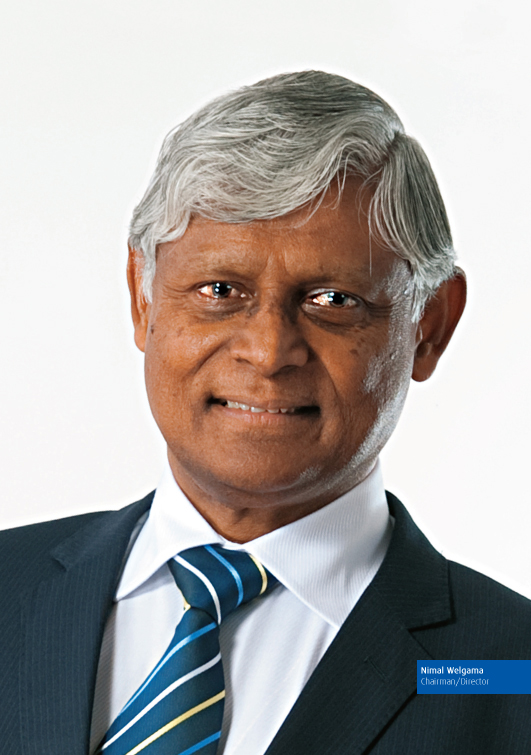
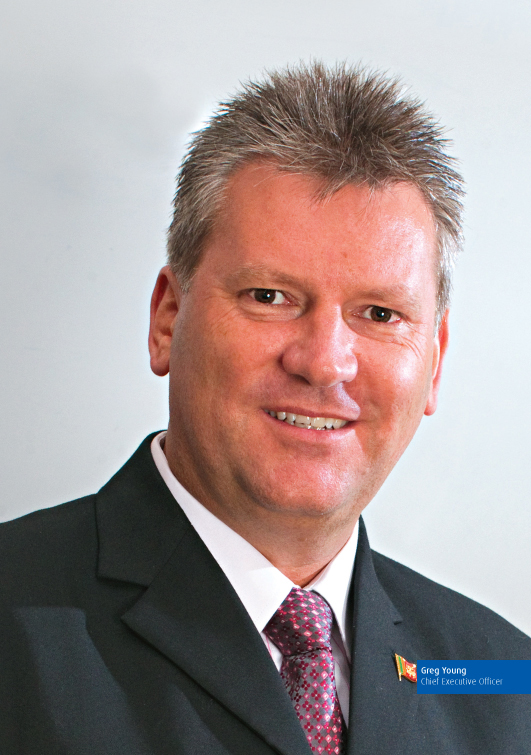
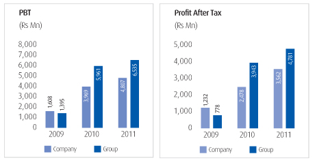
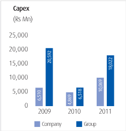

"we astutely introduced and infused innovative telecommunication solutions to make Sri Lanka ready for the future"
Some years ago, when Sri Lanka Telecom embarked on a strategic vision to create an empowered country constructed on a completely IT enabled platform, we were most confident that your company possessed the myriad facets needed to make this vision a reality. We were determined to drive the country's path to prosperity as we were determined to position Sri Lanka as a catalyst in trade and commerce for this region. In laying the groundwork for this preparedness, we astutely introduced and infused innovative telecommunication solutions to make Sri Lanka ready for the future. It was a future where Sri Lanka's development mandate will be driven and aided by us, the country's national telecommunication solutions provider. Visionary initiatives, which included some regional 'firsts' were included in the macro telecommunication solutions plan and we steadfastly began positioning Sri Lanka as an ICT hub, which would drive the larger macro vision.
However, over the last year, this vision transformed into a larger more cohesive canvass that encompassed ICT as the axis upon which the country's very ambitious development agenda was founded. And what is noteworthy is that your company was more than ready to take on this challenging albeit visionary goal, as we had already built the necessary trusses to take Sri Lanka forward. We are truly ready for when the 'Future Calls'.
I am most pleased to present to you the Annual Report and Statement of Accounts of your company for the year ended 2011, wherein Sri Lanka Telecom further etched its position as the national telecommunication solutions provider even more indelibly by having the appropriate fundamentals and foundations in place to lead the country into a milieu where the 'Future Calls'.
The Global Industry in PerspectiveThere were two shocks that reverberated throughout the telecommunication world this year – that of the global downturn which left all facets of the world scathed and the other, digitisation,
"Integrated technology value chains, including critical applications and service platforms, becoming increasingly modular and open, opening up a more competitive landscape"
which mooted a cohesive industry consensus that the global telecommunication industry must move forward via digitisation. This then brought forth a slew of challenges to operators – building new capabilities, new competencies and new infrastructure, a very heavy call in a sliding economy.
With consumers and businesses becoming more demanding and the concept of service 'anywhere anytime' becoming the rule rather than the exception, operators are being forced to increase network capacity and connectivity. In this new global environment, industries were looking at cost cutting and one of the most strategic means of astute cost management while increasing productivity and efficiency was heralded in introducing digitisation, driven by an increased use of the Internet, newer platforms and cloud computing. This also saw a rapid transition from fixed voice to mobile voice. This phenomenon added more travails to operators, who now saw a decline in fixed voice usage spurring decline in revenue, forcing them to revisit the strategies they had employed, rethinking their journey ahead.
The global industry also saw operator dependency on integrated technology value chains, including critical applications and service platforms, becoming increasingly modular and open, opening up a more competitive landscape. This heralded a host of new entrants into the industry, who were fully geared with technological openness to meet new customer expectations. Hence paradigms changed. Nascent versions of the digitisation springboard began emerging with advantages seen overall. Operators began benefiting from the accelerated deployment of broadband networks and better monetizing network investments, while business enablers began generating revenue by offering virtual networks, machine-to-machine and cloud computing platforms, and platforms for specific verticals, including financial services, healthcare, and retail. New experiences are being created and capitalised for exciting user experiences, cascading revenue generation via applications and content sale, while several large operators began leveraging on scale and synergies to become global multi-marketers.
Mobile and data (broadband) saw increasing demand which spurred operators to rebalance revenue mixes vis a vis the Internet, broadband and data services. The global paradigm of using cloud computing, social networking, teleworking and eGovernment initiatives also led to high usage of data volumes signalling a need for better, speedier and more efficient broadband connectivity. It is interesting to note that cellular subscriptions worldwide now stand at an amazing 6 billion, just one billion short of the entire world's population. China and India account for over 30% of global subscribers, both rapidly approaching the 1 billion mark and dwarfing the USA which remains in third place. There are 1.2 billion active mobile-broadband subscribers worldwide with Asia once again notching status as the top region with Korea and Japan leading broadband penetration.
The Global Network Readines Index, published by the WEO and INSEAD for 2010-2011 assesses economies around the world on their ICT advances, increased competitiveness and development in 138 countries. Sweden ranked on top for the second year consecutively, although some Nordic countries lost ground in fully integrating new technologies in their competitive strategies and in utilising these as a crucial lever for long term growth. Singapore, placed at a very stable second, brought the Asian region to the fore, a region which also had some of the best performers in the world. Taiwan, Korea, Hong Kong, Australia, New Zealand and Japan all made it to the top 20. Just behind Singapore are Finland, Switzerland and the USA. Despite its woes, Europe had 11 regional economies among the world's top 20 best performers. A pertinent note on both China and India states that of Asia's largest emerging markets, China remained at 36th place after years of progression within the rankings, while India, surprisingly, slipped five places to 48.
However, the European Information Technology Organisation predicts that while the IT market will grow by 2.7% in 2012, due to a decrease in expenditure in hardware, growth in 2011 fell short. In this new age, it is up and coming industrial nations in Asia, Eastern Europe and South America that will drive the ICT markets. Greece, Italy and Spain were the worst contracting markets for 2011 in Europe, although, the largest individual market of the BRIC countries, China retained its volume of 204.5 billion Euros in 2011, showcasing a growth of 10%. It also reports that IT spending in both China and India will continue to be dynamic, with China's hi-tech market expected to grow 14% in 2012 to 68 billion euros, while India's market will also post two digit growth to 18 billion euros. The ICT sector in India is being driven primarily by the software market expecting a growth of 17%.
Sri Lanka's economy ready to leadIt must be noted that globally, 2011 was a challenging year due to the economic downturn faced by most economic superpowers. However, Sri Lanka's economy remained stable and delivered the promised results, with growth achieving 8.3%, well above both global and emerging economy average growth. This is also the first time in history that Sri Lanka has achieved 8% growth for two consecutive years, seeing the nation exceed US$ 50Bn in GDP and reach GDP Per Capita of US$ 2,830. Inflation remained at a very stable 4.9%, debt to GDP ratio at 78% and unemployment reduced even further to 4.3% from the forecasted 4.5%, a first in our history.
The strong focus on adding fillip to the micro and SME sectors and boosting local entrepreneurship, increase in reconstruction, infrastructure development and expansion of economic activity could be attributed to the decrease in unemployment, while it could also be observed that industries like hospitality and agriculture, with its anticipated boom, opened up multiple avenues of employment and revenue generation. A sharp drop in unemployment was seen among the 15 to 24 age group as well. A palpable increase was observed in overall labour productivity measured by GDP per worker, which was emphatically portrayed in both the industry and service sectors. There was also an incline in employment in the micro entrepreneurship category. The inclusive growth policy encompassed in the Mahinda Chinthana vision for the future also heralded an unrelenting focus on balanced regional development, where the south as well as the north and east were included in a large-scale development programme, ensuring that development is equitable and balanced. All these are indicators that poverty levels also reduced significantly in tandem.
The mega infrastructure development drive saw Sri Lanka have her very first expressway with more highways earmarked, ports and aviation gaining a boost and the hospitality sector infusing large investments into buoying this burgeoning industry. Foreign investment policy was geared towards attracting large scale strategic investments and FDIs were given added focus to low interest rates that remained stable throughout the year. Exchange control regulations were relaxed while taxation reforms and incentives were introduced to encourage private sector investments. There was immense emphasis on boosting export industries, especially those for high value added manufacturing products while the export oriented industrialisation policy was strengthened further.
The country's sovereign ratings and rankings in global indices also gained momentum. In turn, Fitch Ratings positioned Sri Lanka as BB- stable. The Global Competitiveness Index pushed Sri Lanka upwards by ten places to 52, while in the Ease of Doing Business Index, Sri Lanka gained nine place to be ranked at 89. In the Civic Engagement Index, Sri Lanka was placed 7th. One of the country's biggest achievements was its ranking in the Human Development Index as the best in the region at 97, aided by positive indicators such as adult literacy standing at 91% and life expectancy at 75, the highest in the region.
The local industry gears for the futureThe five pronged strategy for economic hub status in South Asia is based on developing the marine, ports, energy, commercial and knowledge sectors. While the telecommunication industry will be a strategic catalyst in envisioning the knowledge hub aimed at making Sri Lanka a BPO and KPO destination, the industry is also tasked with being the axis upon which the other hubs will be built. All mega infrastructure projects must rely on state of the art telecommunication solutions and we believe that in fulfilling this responsibility, we as the national telecommunication solutions provider, have made the country ready, enabled and empowered.
Reflective of global trends, there is a marked shift from traditional voice communication to Internet enabled products that very knowledgeable and discerning customers demand as their right. The industry therefore must and has to be geared to deliver these expectations via superior networks and technology platforms. With 64 telecommunication service providers making up the telecommunication industry landscape, it is imperative that Sri Lanka now gears itself to increase ICT literacy and ICT penetration, both of which are well below average and are very much in focus in the country's macro development agenda.
Although the industry in itself posted Rs 115 Bn in revenue in 2011, the prospects for increasing this are phenomenal. The growing trend observed in fixed and mobile broadband service in both developed and emerging economies should be the way forward. Currently, total broadband penetration in Sri Lanka is a dismal 3.2%, with fixed broadband at 1.3% and mobile broadband at 1.9%. Unfortunately, the industry is faced with some challenges in dealing with the changes from fixed line to mobile, both in voice and broadband. Fixed line CDMA for example has no broadband capability, limiting any expansion on this platform. Similarly, with the transition from fixed to mobile in voice, voice revenue and usage is declining rapidly and operators must begin looking at other avenues to boost their bottom line.
Competitive and Ready when the Future CallsOn the ethos of being future ready, Sri Lanka Telecom began laying the groundwork, infrastructure and knowledge and skill base in anticipation of the transformations that will take place within this industry. We envisaged the demand for futuristic telecommunication solutions and the fact that Sri Lanka can truly be a driver and leader in regional trade and commerce. Having taken our role as a strategic partner to this future journey very seriously, our strategies now answer to demands, as the Future Calls.
Planned, tested and implemented, SLT Backbone Network now is truly national. It covers all the electorates meeting the TRCSL NBN requirements, which while being a significant achievement for us, also poses immense opportunities for the entire industry as it is now accessible and available to any communication service provider. Similarly, our NGN (Next Generation Network), aimed at improving efficiency, increasing capabilities for future demands and reducing cost, remained well aligned to the timeline, migrating 97,000 customers in 2011 within Phase 4, totaling 240,000 (which is 26% of the total telephone subscribers) being served on this platform. The very visionary i-Sri Lanka project, which is based on FTTN (Fiber to Node) deployment and is meant to increase IPTV and broadband speed, was launched in Jaffna this year, which reiterated our stance of empowering the people of Sri Lanka with connectivity across all geographical boundaries.
Based on the vision that, "All Sri Lankans are seamlessly connected with world class information, communication and entertainment services", Sri Lanka Telecom also aligned its new corporate brand identity with this national mindedness in focus. One Country. One Voice is aimed at emphasising the role that Sri Lanka Telecom, as a national industry leader, plays in uniting the country under one vision and also in infusing the concept of connectivity as being the great unifier of the nation.
The Transformation Programme continues successfully, well aligned to the timelines and delivering on the end objectives. Customer centricity is primary and remains the springboard on which the other facets are worked upon. Innovation, responsiveness, teamwork, business processes, increase in productivity, prudent cost management, resource management and development, strategic investment, governance and best practices, values, ethics, transparency and technological advancement have all been addressed in our comprehensive Transformation Programme. The programme has been the pivotal feature in our being a catalyst within a milieu wherein the 'Future calls'.
In the regulatory environment, Sri Lanka Telecom remained proactive with the Telecommunication Regulatory Commission of Sri Lanka, discussing and negotiating the future journey for both the industry and the group. The National Backbone formed a primary component in discussions pertaining to issuance of the new license, as it did, when we responded to the public consultation on the NGN Policy and Regulatory Framework for the Development of NGN in Sri Lanka. We also forwarded proposals in response to the TRCSL's request into having our input for the amendment of the Telecommunication Act of 1991.
Synergies leveraged for growthIn this evolutionary era, Sri Lanka Telecom, in analysing the demands, challenges and expectations of the future, made a decisive conclusion that being a diverse but technologically advanced Group, our future direction must be mapped on a path of synergistic cohesion. The Group thus began implementing a plan of integrating its products and services to take advantage of the strengths that are prevalent within the Group, as was seen in the three packages launched for Megaline, which collated the synergies of PEO TV, Broadband and Voice into the mix. This milieu of greater cooperation and collaboration will also infuse prudent cost management strategies including minimising duplication, better resource management, sharing infrastructure and infusing multiple innovative features into our business vision.
The Group did exceptionally well, posting revenue of Rs 50.95 billion, mirroring the advantages we gained from leveraging on group synergies. Group profit before tax is now at Rs 6.53 Bn, improving further on last year's milestone of Rs 5.96 Bn, which in fact was the turning point in making the Group a sustainable business entity.
With a new CEO at the helm, our flagship subsidiary and the national mobile services provider, Sri Lanka Telecom Mobitel launched some world's firsts into its portfolio, augmenting its status as a pioneering mobile services provider for the region. The world's first tea vending machine Ex Tea was launched by Mobitel and the company also became the first in South Asia to demonstrate 4G LTE technology with data speeds of upto 96Mbps. Technology broke new ground further when Mobitel demonstrated Mobile Augmented Reality and enabled Nawaloka Hospitals to transmit the latest 3Tesla MRI imagery over its mHealth platform for the first time in Sri Lanka. Collating a number of awards this year including at the SLIM Brand Excellence awards, the Engineering Excellence Awards, the CNCI Achiever Awards and the National Business Excellence Awards, Mobitel added to its quantitative success with impressive results. With a market share of over 24%, Mobitel posted a Profit Before Tax of Rs 2.06 Bn.
SLT Manpower Services which is tasked with delivering the best of human resources for the group's present and future needs continued to post good results in both deployment and employee turnover, which stood at an annual average of 6.93%. The company has now placed a total of 2,310 into various placements within the Group, working on the fundamental of 'the right person for the right job'. I do believe that Sri Lanka's knowledge hub status can benefit from the synergies we have at SLT Manpower Services.
PeoTV is the pioneer of Pay TV in Sri Lanka but has in its few years of existence, taken the boundaries of expectation beyond the future. PEO TV is not simply geared for info-tainment, but is a vital tool in everyday life. From introducing directory facilities, to myriad choices in programme content, to controlling that content, the conveniences are multiple. These positives were reflected therefore in an impressive, 70% growth in subscriber numbers. The bouquet
"We envisaged the demand for futuristic telecommunication solutions and the fact that Sri Lanka can truly be a driver and leader in regional trade and commerce. Having taken our role as a strategic partner to this future journey very seriously, our strategies now answer to demands, as the Future Calls"
of channels was increased to 67 with the addition of Tamil and MTV channels as well, with an On Demand Video Library also constituting more choice. On the aspect of control, PEO TV launched an in-house designed services and parental control navigation system to avoid unauthorised usage and access, another first for the country. In a bid to substitute the home computer, the usage of television is being revolutionised, as next year Sri Lanka's first ever TV Banking Portal is billed to go live.
The market leader in directory information dissemination, SLT Publications holds fast to its status as an information innovator, going beyond boundaries to make information accessible anywhere anytime. This year, the company established the new toll-free trilingual call center making information available to customers anytime. The popularity of the Rainbow Pages web portal was evidenced when people from 154 countries used the SLT Rainbow Pages web portal. More exciting information avenues are being pursued with industry and specialist specific directories being designed for added convenience.
SLT Services, which provides the backbone for the Group's data networking continued to build on its ISO certified status, accentuating on productivity and competence, driven by a young dynamic team. The company showcased a growth of 19% in turnover and was also rewarded with an award for Best Technical Support. The expertise ingrained within the company was espoused even further when SLTS together with Sri Lanka Telecom, cohesively integrated its strengths to establish solutions for various thrust industries and national events/venues.
Social Stewardship in contextWe are the driver of a national vision, a vision that is destined to take the people of Sri Lanka on a sustainable path of development.
"Connectivity is a great unifier and we believe in this strongly, while we also believe firmly that we can, as a leader, shape and influence the nation's mindset and attitude for the better"
We also know that being a corporate steward, we are tasked with a crucial responsibility to create, strengthen and sustain developmental prongs on multi-faceted dimensions, but founded firmly on a common platform of unity in diversity. Our very corporate brand speaks of this. Connectivity is a great unifier and we believe in this strongly, while we also firmly believe that we can, as a leader, shape and influence the nation's mindset and attitude for the better.
As a Group, we come together to serve national objectives. Whether in times of national disaster, when floods or drought pose challenges to various communities, or where fillip is needed in developing industry or industry segments, or in buoying our national cricketing heroes, the SLT Group is always at the fore. One of our biggest achievements this year was in focusing on the micro and SME segments, where we established a dedicated unit within Sri Lanka Telecom to advise and manage this vital sector that is being positioned as a crucial conduit to national development. The connectivity we are permeating throughout the country also enables industries to grow, while increasing productivity and efficiencies, which in the larger picture, aids macro development.
On a different dimension, Mobitel, being the proud partner of the national cricket team, supported Sri Lanka's bid for the World Cup by not only quantitatively and qualitatively being a true partner of the team, but also in assisting in the refurbishment and upliftment of world cup venues in Sri Lanka to meet international standards.
Based on the national development agenda of increasing ICT literacy and English proficiency, Sri Lanka Telecom has been actively working with schools around the country, creating ICT hubs and presenting books to libraries around the country. This year, we also trained librarians who are the custodians of knowledge and literature, in order to spur them to inculcate the reading habit among the younger generation. We also actively partner academic and professional institutions to improve professionalism and employability among the membership.
Our input as an industry leader therefore was suitably rewarded when Sri Lanka Telecom received two People's Awards at the SLIM Neilson People's Awards for the Most Popular Fixed Telecom Brand and the CDMA Telecom Service Brand of the Year. The National Business Excellence Awards also echoed this success when we gained silver awards for the Best Knowledge Integrator and in the Infrastructure and Utilities Sector. The emphasis on quality as detailed in our Transformation Programme was greatly reinforced when Sri Lanka Telecom was conferred with six awards at the JASTECA Taiki-Akimoto 5S awards held this year.
The Future CallsEnvisaging the transformation of Sri Lanka into South Asia's economic hub is the axis upon which we now position ourselves as the 'Future Calls'. The aviation hub where the country will see its second international airport in Mattala, the modernisation of the Bandaranaike International Airport, the development and upgrading of other domestic airports and the positioning of Colombo as a regional logistics and services hub makes us a strategic partner to these future plans. Similarly, in the establishment of the new oil refinery at Hambantota, the prospects of oil exploration and production, development of oil trade related ancillary services and renewable energy sources in the context of creating an energy hub require considerable technological and innovation input from a telecommunication perspective. We can also envisage that the container mega hub in the Colombo Port, the multi-purpose Hambantota Port, the cruise shipping center in the Galle Port and the Oluvil, Kankesanthurai, Point Pedro and Tricomalee ports all adding myriad dimensions to the maritime hub, require considerable telecommunication technology to drive its capabilities aligned to expectations.
We also envisage that Sri Lanka Telecom can be one of the most vital contributors in the creation of the knowledge and commercial hubs, in constructing a strong and sustainable foundation to drive commerce and the knowledge industry. For the present, Sri Lanka Telecom has the trusses in place and taking our future plans into perspective, we are well ahead of time in being the telecommunication partner for these two crucial hubs. In driving the commercial hub which envisages establishing Sri Lanka as the foremost centre to provide commercial services, international banking and investment services and driving growth industries like ports and tourism, the crucial driving factors of Sri Lanka Telecom's NGN, NBN and i-Sri Lanka Project are already implemented.
Similarly, from a Knowledge hub prospect, making Sri Lanka a BPO and KPO destination would require improving IT literacy and enabling Internet access across the country. This too has already been set in motion and Sri Lanka Telecom has in fact, established technology platforms that are deemed as firsts in the region and will surely aid the journey to hub status. The synergies prevalent within the Group remain a fundamental factor to our strategic partnership in this national vision and as and when the Future Calls, Sri Lanka Telecom can confidently proclaim that we are ready!
AppreciationsIt has been a year of change for us but one that has been rewarding too. We have seen the results of our very ambitious Transformation Programme and the innovative infrastructure platforms we implemented come to fruition. These results however required and continue to require visionary thinking and a cohesive decision making process, where strategies are conceptualised, designed and implemented with the end result in mind. And to this end, I must thank my Board of Directors for their absolute cooperation and confidence placed in me, to carry out these revolutionary changes.
My sincere thanks also to the CEO and senior management, who ensured that the results were achieved through dynamic leadership permeated to a very motivated team; the entire SLT team bought into our vision of continuing to be the nation's telecommunication enabler. To our valued shareholders, thank you for your confidence and continued loyalty which we hope will continue into the next year and beyond.
"We are acutely aware that Sri Lanka's vision of being an Economic Hub for South Asia hedges primarily on having apt and advanced telecommunication solutions support, as this is the backbone upon which much of the implementation and success of the five pronged hubs will depend."
The future is here! That's what we at Sri Lanka Telecom have been striving over the past few years to achieve. Having introduced and implemented revolutionary transformations into the telecommunications industry in Sri Lanka, in 2010 we declared that we were Future Ready. And over 2011, we ensured that the readiness we proclaimed came to fruition. Today, we can truly say that as the Future Calls, Sri Lanka Telecom is poised and ready to partner the nation in its journey towards being the Wonder of Asia.
For Sri Lanka Telecom, the future is now. We truly walked the talk and delivered on our promises, our plans and strategies that we put into place in the past years, to be ready as the future calls. That is the raison d'etre for the Next Generation being here; the technological upgrades and improvements, the network architecture, the organizational re-structuring with the right people and the right focus, the attitudinal transformation and the emphatic marketing focus. From an implementation perspective, there's absolute cohesion and convergence. Once the required groundwork was established and testing processes implemented, the final phases of execution were rolled out. We are now well prepared as the Future Calls, an important stage of our journey.
The 2011 JourneyMuch of what we implemented during this year was to solidify our plans, test the technology and establish and strengthen partnerships, while deploying and rolling out these strategies within our integrated plan, in order to make our Journey in 2011 the springboard for Sri Lanka's development agenda. We are acutely aware that Sri Lanka's vision of being an Economic Hub for South Asia hedges primarily on having apt and advanced telecommunication solutions support, as this is the backbone upon which much of the implementation and success of the five pronged hubs will depend.
"This year, we are extremely proud to see our team truly focused on a common vision, coordinating well and aligned unitedly with the strategies and directional plans."
2011 therefore was certainly a year of change, a successful postlude to the transformational journey we began three years ago. This phase included gearing the team to focus on a singular vision, imbibe ownership into our plans and become a part of this strategic journey. This year, we are extremely proud to see our team truly focused on a common vision, coordinating well and aligned unitedly with the strategies and directional plans. And aligned to this organisational transformation journey, our strategic focus throughout previous years was built around an action plan focused on the delivery of services, operational efficiency, network capability and reliability and the integration of group synergies. This year, we began a sustainable journey of delivery and execution to ensure enduring solutions and benefits for our customers, where the aspirations of the future are embedded within our plans.
Corporate Branding permeates OnenessFor over one and half centuries Sri Lanka Telecom has quietly revolutionised the telecommunications industry, delivering solutions that can only be deemed as best in class. As an industry leader, we fulfilled our promises throughout our existence, but we do believe that our role also encompasses a responsibility towards nation building and creating a national mindedness in this new era of optimism. Sri Lanka Telecom is one of the best loved and most respected brands in the country and therefore can be very influential in shaping the mindset of the nation, motivating people to be the masters of their destiny. Given that Sri Lanka Telecom is a vital stakeholder and partner in the country's march ahead as a nation, our brand repositioning symbolises the abundant hope and optimism that is permeating the country.
It became apparent therefore, that our very heart and soul must reverberate this message of hope, optimism and unity to the nation. This is what spurred the rejuvenation of our brand identity, linking it with a responsible message to the nation, while creating an emotional foundation that would not only reflect a country united on one platform, but also our ambitious plans for the future. 'One Country. One Voice.' embodies the path that Sri Lanka will step into as a united people, grasping opportunities and overcoming challenges, while far reaching telecommunication solutions remain the unifying factor in creating this togetherness. One Voice heralds the introduction of unique and innovative products and services across voice, data and video, inspired by the vision of connecting all Sri Lankans seamlessly through our world class telecommunication solutions.
Through the rebranding process, it also became apparent that visual symmetry is imperative across all our brand identities, which now have a uniform corporate identity and logos that echo the brand promise we espouse.
The Megaline RevolutionAligned to the new corporate brand identity, a new value proposition underpins our flagship product, SLT Megaline, which was re-launched this year. Positioned as 'one line that offers three unique experiences: Voice (best in quality telephone), Broadband (uninterrupted high speed internet) and Personalised Entertainment (Interactive PEO TV). Megaline has truly revolutionised the very heart of technological innovation. Emphasising this innovative stance, the
newly enhanced Megaline packages simplify telecommunication choices, while embodying immense technological advancements that are the axis upon which Sri Lanka Telecom works. Single Play (Telephone Only), Double Play (Telephone + Broadband or PeoTV) and Triple Play (Telephone + Broadband + PEO TV) were the three new packages introduced, in addition to an aggressive campaign aimed at converting Citylink customers to Megaline with attractive offers. These will continue to drive the growth in our Megaline customer base.
The SME NexusThe Government intends to make the SME sector a key growth driver in the country's economy with a significant thrust to ensure this segment of the economy is empowered. Under the transformation process, Sri Lanka Telecom now has a dedicated SME group and focus geared to identify and manage SME customer needs.
This focus is already yielding results in customer growth, customer satisfaction and customer retention.
Performance and TrendsSri Lanka Telecom is one of the largest capitalised companies on the Colombo Bourse and the strong results the company continues to deliver evidence our stable and pragmatic approach. This year the SLT Group achieved a revenue of Rs 50.95 Bn, displaying a growth of 1.4%, while Profit Before Tax saw growth of 9.6%, to stand at Rs 6.54 Bn compared to last year's Rs 5.96 Bn. Profit After Tax improved over last year's Rs 3.94 Bn, posting Rs 4.78 Bn and a growth of 21%.
At company level, revenue of Rs. 32.29 Bn was recorded which is a negative growth of 3%, mainly driven by reduction in intercompany revenue and planned rationalisation of thin margin revenue lines. Profit Before Tax recorded a growth of 21% to stand at Rs.4.8 Bn. Profit After Tax improved to Rs.3.6 Bn recording a growth of 44%.
During the year we continued our strong focus and discipline of managing costs and identifying and eliminating waste and leakage, combined with the exit of low margin and negative contribution products, which has contributed to our solid financial results.
Broadband revenue recorded a growth of 29% for the year. Meanwhile, enterprise sales, one of our most successful business areas this year, increased revenue 11% over the previous year, while wholesale revenue, displayed similar trends, increasing by 16%.
We acknowledge and understand the global trend shows a movement away from fixed voice calling, a trend that we also observe in Sri Lanka. However the demand for high speed uninterrupted broadband has fueled our strategy to deliver double and triple play services, which has contributed to ongoing growth in our fixed customer base and revenues.
The penetration rate of broadband services remains lower in Sri Lanka than other comparable countries and world trends, it is therefore incumbent on us to drive this growth in Sri Lanka through our fixed Megaline and Mobile Broadband Products.
In Sri Lanka, Broadband penetration remains considerably low at 3.2% (fixed broadband 1.3% and mobile broadband 1.9%). We observe there is substantial growth potential in Sri Lanka for Broadband and this will certainly increase in the coming years, as infrastructure including the laying of fibre optic cables and the penetration of mobile broadband expands coverage through mobile 3.5G/4G technologies.
i-Sri Lanka gears for a boomThrough our i-Sri Lanka project that commenced in 2011, our plan is to enhance and upgrade the existing fixed network lines, by expanding the fibre network though FTTN (Fiber to the Node) deployment. By reducing the copper cable length, reliability is improved as are quality and Broadband data speeds. Fully integrated into our NGN Modernisation Programme, we believe that the growth and our strong market share in Broadband is evidence that i-Sri Lanka is adding the required foundation for our future plans. This will ensure our quality and range of services remains on par with developed countries, a definite competitive edge in the current context.
Our i-Sri Lanka programme targets a broadband data speed of up to 20Mbps within a 2km copper cable length, with our plan to achieve this for more than 90% of our fixed customers by the end 2013.
A significant milestone for our i-Sri Lanka project was its public launch in Jaffna in September.
NGN is the futureConverging all our access networks into a singular platform is at the core of our Next Generation Network (NGN) strategy. As we eliminate historic legacy platforms this will cascade to a reduction in the cost of maintenance of these aging platforms, improved efficiencies, faster service delivery, increased speed and performance and new capabilities for future services, all implemented with ultimate customer service excellence.
We are now implementing NGN Phase 4, which commenced in 2011 and when completed in 2013 will serve an additional 600,000 customers on the NGN platform. The explosive growth and demand for high speed Broadband bodes well for us as our infrastructure and marketing plans have been integrated to ensure that NGN benefits can be delivered island wide.
The establishment this year of the Technology Strategy Committee as a sub-committee of the Board has given enhanced technology direction and leadership to the Group. They have guided our strategic investments, building a cohesive technology strategy and steering the Group towards the future.
SBN now aligned to NBNThis year saw a significant milestone as SLT demonstrated that our SLT Backbone Network (SBN) could meet the requirements of the TRCSL's (Telecommunication Regulatory Commission of Sri Lanka) National Backbone Network requirements. SBN is now truly national with an ultra modern fibre network now covering 100% of the 168 electorates around the country and given its wholesale characteristics, conforms ideally to the Company's wholesale business strategy. With pricing and terms being non-discriminatory, SBN can serve both large and small communications service providers, since its reach is wide and is built on a strong technical and capacity evolution plan that is market driven.
Sales and Marketing HighlightsWhile the corporate rebranding and Megaline relaunches were significant events within our marketing portfolio, we also continued to aggressively promote new products and services to ensure that we remain top of mind. Megaline packages were enhanced with very attractive rates and to augment these offers, we promoted a seasonal campaign in April with discounted new connection charges, while also heralding a campaign to increase Broadband usage. The latter, 'WWW & Win', enticed customers to subscribe to SLT's Broadband service without a start up fee. We also began 2011 with 'Happy Broadband New Year 2011' augmenting the BB Entree Package with major enhancements. This delivered a 100% speed increase and a significant increase in free data usage for all existing and new entree package customers, at no extra charge. We also enhanced product functionality to Broadband customers by introducing 4-port WiFi routers at a very special price.
We began to aggressively campaign the conversion of Citylink customers to Megaline with attractive packages, additional features, loyalty schemes and affordable pricing. Our IDD products too gained a boost through premium IDD and budget tariff revisions, as well as the introduction of a unique National Day Promotion, for customers to call those countries at special low prices on their national day.
Premium SMS Services were also introduced this year, aligned to the new trend of increasing popularity of reality TV shows. To support these, special SMS codes were used by Ranaviru Real Star Mission, Net FM, V FM and Siyatha FM.
Enterprise and Wholesale Business gain fillipHaving conducted an indepth market analysis of our enterprise and wholesale business, this helped us to identify the market potential for each of our products resulting in a strategy of targeting potential customers with service level agreements. Leveraging our i-Sri Lanka project and NGN enterprise services capabilities, we customised integrated solutions for corporate and enterprise customers, as we noted their renewed urgency and readiness to adopt new and emerging technologies to support their business expansions.
We were most successful in integrating both the public and private sectors into our customer portfolio, including blue chip conglomerates, BPOs, NGOs, aid agencies, large retail chains, financial services institutions, exporters and importers and utility companies, while our existing customers requested service upgrades. We do believe that our competitive edge lies in our superior technology, the expertise, competencies and knowledge of our team and the availability of proven and integrated services across our country-wide infrastructure.
With the observed economic growth in the country and the accelerated need for communication solutions, we see immense growth opportunities, especially in growth sectors including tourism, ports and aviation, ICT, BPO and KPO and in the north and east, as aggressive development plans come to fruition.
Transformation for a future callingThe organisational changes embodied in our transformation programme have reaped tangible results over the last year. We began the year with five broad areas of focus, namely new business, product portfolio, network, IT and business processes. We
"As we eliminate historic legacy platforms this will cascade to a reduction in the cost of maintenance of these aging platforms, improved efficiencies, faster service delivery, increased speed and performance and new capabilities for future services, all implemented with ultimate customer service excellence"
also had to interject the HR factor into optimising our organisational structure, keeping in mind that our success depends predominantly on 'the right person for the right job'. This involved a number of substantial organisational changes where job roles were re-focused, performance objectives have been better aligned and teamwork made a priority. Thus, the success seen today, is due to the various teams collaborating and coordinating much better in this change environment, while focusing on business priorities with an ownership and commitment that is truly commendable.
Integrating our Transformation Programme and Business Plan, to embed operational efficiencies, astutely managing costs and capturing benefits from Network and IT optimisation remain a priority. Over this year, we have seen changes within the telecommunication business, reflecting into a rebalance of our company revenue mix and product and service portfolio, which we were prepared for through re-alignment of our business model.
With revenue changes driven by broadband, data and enterprise services growth, and with the global pattern of decline in fixed telephone usage becoming the rule rather than the exception, Sri Lanka Telecom is very focused on creating the optimum balance of revenue mix stemming from the right product mix. This is being done prudently and after indepth analysis of the trends matched to our service strategy.
In 2011, as part of the overall strategy, we aggressively sought out areas of opportunity, while identifying gaps that contribute to leakage or wastage resulting in unnecessary expenditure. We identified loss making or low margin product lines, rationalised them and consolidated our portfolio which resulted in reducing revenue but significant benefits to profitability. In tandem, we worked towards increasing efficiencies as a key strategy of our overall Business Plan. This is being supported through IT and process change. These initiatives all contributed to delivering a very positive impact on our bottom line, as is seen in our strong financial performance for the year.
Customer Centric InitiativesEach of our initiatives ultimately has an impact on our end customer, given our position within the service industry and the immense responsibility to partner the macro vision of the country's development. Whether in product and service enhancements, operational efficiencies or on the larger scale in enhancing infrastructure to create an empowering milieu to become South Asia's economic hub, Sri Lanka Telecom is fully cognizant of the customer being the catalyst at the centre of all our business decisions. Whether it's in the new packages introduced to Megaline, the changes in tariffs, discounted products and services or even the corporate branding that captures a oneness among the nation, Sri Lanka Telecom demonstrates this customer centricity from its very heart and soul.
Increasing accessibility, reach and convenience therefore are also top priority. Four new Teleshops were opened this year in Moneragala, Jaffna, Kilinochchi and Puttalam bringing a single contact point for customers in these areas for sales and customer service. At the end of 2011, 29 Teleshops and 31 Regional Offices were in place around the country to empower the regional areas in Sri Lanka to have easy access to our services.
We further increased our payment network to over 3,500 outlets, while also re-designing our bill to have a more user friendly feel. With this new concept, the bill is now also used as a communication tool with our customers to promote offers, new products and solutions.
The fast developing area of Jaffna also saw a boost when we refurbished and reopened the Jaffna Teleshop as a demonstration of our commitment to the north and its development, as it deals with the challenges and opportunities that are emerging in these areas. The new corporate and product branding is prominent in all locations through product demonstrations for both Broadband and PEO TV. Believing strongly that communications must be accessible to all, we also upgraded and expanded our free internet kiosks at the Bandaranaike International Airport, using our new branding and campaign visuals to create a more cohesive message and customer convenience.
Our support to the national agenda of developing all areas of the country is demonstrated through our partnership of the Deyata Kirula exhibition, focusing on empowering rural communities to develop and contribute to the macro economy. Sri Lanka Telecom continues to be an integral partner in Deyata Kirula, with the goal to empower the community through ICT enablement, as evidenced through our investment in improving telecommunication infrastructure in the Moneragala district, which hosted the event in 2011.
SLT was also successful in winning the Government contract for operation of the 1919 dedicated hotline that empowers the Government Information Center.
Capital investment for growthA fundamental characteristic of the telecommunications industry is its capital intensive nature and given the rapid and evolutionary changes in our industry, capital investment must be far thinking and astute. The telecommunications landscape is one of constant change coupled with an emergence of consolidation. We have been a Group that has remained ahead of its time, infusing investment into infrastructure that will propel us it into the future on par with global expectations.
In 2011 our capital investment programme continued to ramped up with a significant capital investment of Rs.18,022 million, an increase of 176% at group level over last year which is indicative of our NGN, capacity enhancement and fixed network modernisation programme and mobile network expansions, and all investments for
the future. Projects like i-Sri Lanka require immediate and significant investment, as do network modernisation, increasing fixed and mobile Broadband capacity and coverage, expansion of fibre aggregation and access networks. Our plan for 2012 will see yet another significant capital infusion, as we continue this journey.
Besides having global connectivity, our group represents a wide portfolio of products and services built on unmatched synergies across this sector. We have worked on optimising capital investment across the group, while sharing infrastructure facilities in order to deliver significant efficiencies and increase our capabilities. One example of this are the strong group synergies delivered in the implementation of our Mobitel stage 6 coverage and capacity expansion.
Driving sustainability through social responsibilityThe very nature of our business is one that empowers people. This empowerment spurs sustainable development, where connectivity and the use of technological tools give entire communities the right skills and knowledge to contribute to wider society. Ours is a national responsibility, where we are tasked with driving forward the country's vision of becoming an ICT hub and also being the axis upon which the vision of being South Asia's Economic Hub is retained. Our corporate stewardship must walk the talk, being an enabler that develops the economic, social and environmental dimensions of the country. Our influence on myriad stakeholders is multi-faceted and having already ensured that we are ready when the future calls through our revolutionary NGN, fibre backbone and access network, i-Sri Lanka and other initiatives, Sri Lanka Telecom is the driver, unifier and equalizer for sustainable development across the demographics of society, communities, gender, geographies, cultures and even age.
From a social responsibility perspective, Sri Lanka Telecom's sustainability policy revolves around the broad platforms of enhancing literacy and competencies, appreciating arts, culture and health. For nine years we have partnered the Asia Foundation in presenting books to school libraries across the country, and again this year a sum of Rs 2.5 million was invested to distribute books among children attending schools in Anuradhapura, Mullaitivu and Colombo districts. In tandem, we also conducted a library training programme for librarians of several schools, to ensure that apt leadership is given to the children in order to inculcate good reading habits. Similarly, we partnered a number of professional organisations at their national conferences and key events throughout the year, in order to strengthen Sri Lanka's professional forums to enhance their knowledge and capability.
Into the times of changeWe are now poised for the future, ready for the times of change and evolution. Our priorities in 2012 will be the execution of our plan and delivery on the foundations we have laid and the initiatives we are currently rolling out. We will continue to offer world class ICT and infotainment services, deploying the best in the market to our customers.
Our transformation programme continues as we embed the changes delivered to date and continue to optimise our structure and staff to meet the future.
We are investing heavily in our network infrastructure through NGN deployment island wide, Next Generation Access via i-Sri Lanka (FTTN) and High speed wireless broadband (3G and 4G).
The SLT Group intends to be a catalyst and an integral partner in growing the country's GDP, where telecommunication solutions will support and enhance economic development and creation of a knowledge hub, making Sri Lanka a 'Broadband Island' with world class global connection. In tandem, the Group will inculcate a synergistic approach internally with a sharing of resources, convergence to a common NGN network, 4G implementation and convergence of fixed and mobile converged services through an integrated approach to our customers.
AppreciationsI sincerely thank the Chairman and Board of Directors for giving me the direction and guidance to lead Sri Lanka Telecom in a year when our plans are now in delivery and execution stage. It has been a challenging year, but a rewarding one in which we have seen the telecommunication revolution come into its own. I do believe that Sri Lanka Telecom has now created a legacy, not only in this industry but within the macro developmental picture of the country itself, having brought the future into the present. I acknowledge and thank the leadership team for their support and the complete SLT team island wide for their continued commitment to our vision and for the hard work to ensure our goals are met. I'm proud to be a part of this dynamic team, who have now truly made our company ready as the Future Calls.